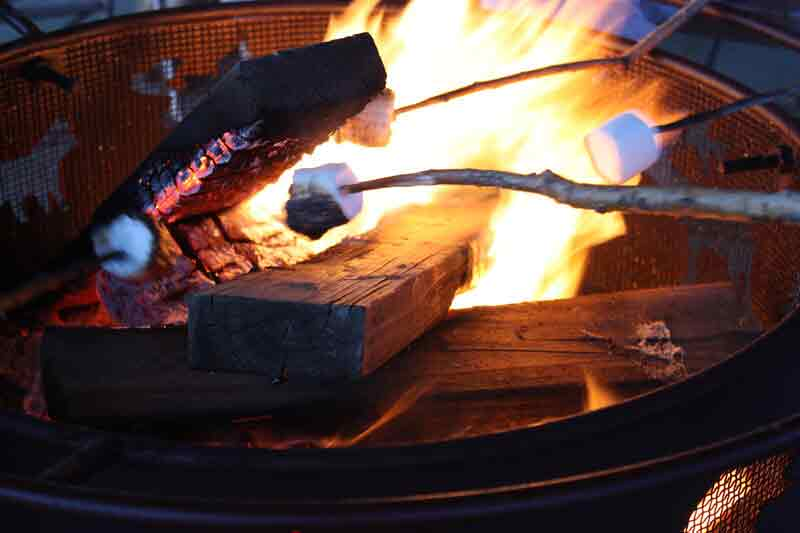

Why Choose J&S Creekside Cabins for Your Catskills Cabin Rental?
Choosing a cabin rental in the Catskills comes down to location, quality, and trust. J&S Creekside Cabins delivers on all three. The property sits directly on the Willowemoc Creek in Livingston Manor, giving guests immediate access to one of the most productive trout streams in New York. Every cabin is maintained to a consistent standard that returning visitors depend on, and the family-run approach means questions get answered and concerns get resolved without layers of bureaucracy. Whether planning a fishing trip, a family gathering, or a quiet weekend away from the city, this property provides the foundation for a memorable stay in Sullivan County. Visit J&S Creekside Cabins at 12 Wegman Rd, Livingston Manor, NY 12758 or call (607) 242-2960 today
What Cabin Rental Services Does J&S Creekside Cabins Offer in Livingston Manor?
J&S Creekside Cabins provides cabin rentals, cottage rentals, and seasonal vacation accommodations for guests visiting the Catskill Mountains. The property accommodates couples, families, and small groups seeking fly fishing access, outdoor recreation, and weekend getaways in Livingston Manor. Each cabin features a full kitchen, private outdoor areas, and direct creek access along the Willowemoc. The Trout Cottage offers additional space for larger parties. Guests enjoy the flexibility to plan their own schedules while staying at a property that handles the details of comfort and cleanliness without compromise. how to pick the perfect Catskill mountain cabin for your trip

Our Commitment to Livingston Manor and the Catskill Mountains
J&S Creekside Cabins operates with a deep respect for the land, the water, and the community that make Livingston Manor a special place. The property supports catch-and-release practices on the Willowemoc Creek and encourages guests to engage responsibly with the natural environment during their cabin rentals Catskills experience. Maintaining the quality of the creek, the surrounding forest, and the quiet character of Wegman Road ensures that future visitors will find the same beauty and tranquility that current guests cherish. This commitment to stewardship is not a marketing position but a reflection of how the family behind J&S Creekside Cabins lives and works in Sullivan County every day.